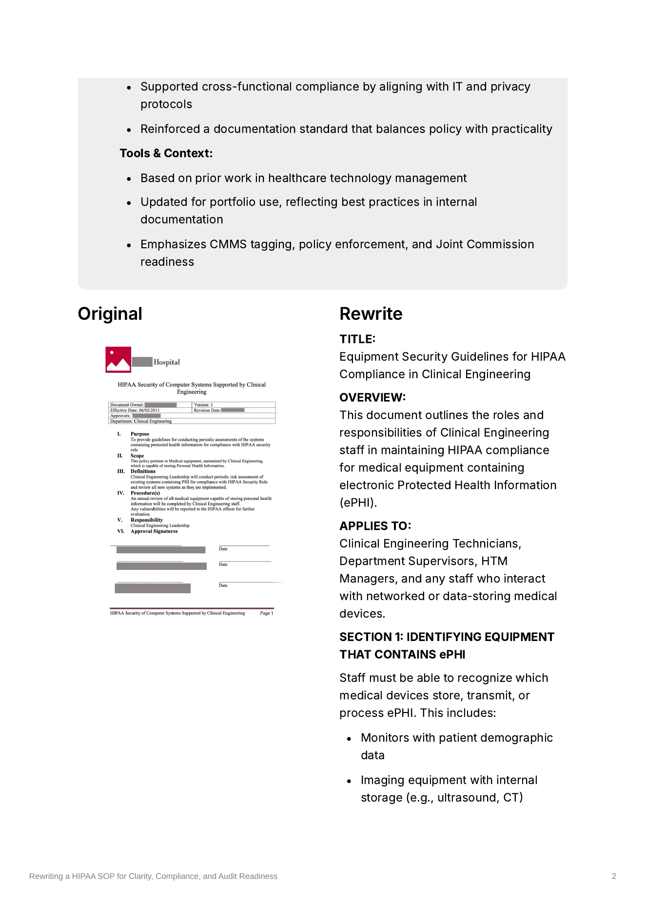

Healthcare Technology · Compliance · Technical Editing
Rewriting a HIPAA SOP for Clinical Engineering
A rewrite of an outdated healthcare technology SOP to make HIPAA requirements easier for technicians to understand, follow, and document.
The problem
The existing SOP for handling medical equipment containing electronic protected health information was outdated, overly technical, and difficult to use.
Technicians working with networked and data-storing medical devices needed actionable guidance, not dense policy language.
The audience
Clinical engineering technicians, supervisors, HTM managers, and other staff responsible for servicing or managing networked and data-storing medical devices.
What I did
I reorganized the SOP around the tasks technicians encounter while working with equipment rather than the structure of the underlying policy.
I replaced dense sections with clear headings, bulleted instructions, and specific documentation prompts so technicians could quickly identify what they needed to do during onboarding, service, transfer, and decommissioning.
The solution
The rewritten SOP provides task-focused guidance for:
- Identifying equipment that stores or transmits ePHI
- Managing device access controls and passwords
- Protecting patient information during service events
- Sanitizing equipment before transfer or decommissioning
- Reporting potential HIPAA incidents
- Maintaining supporting records for audits
The finished documentation
The rewrite turns a policy-heavy document into a structured reference technicians can use while working with equipment. The full sample includes a comparison with the original SOP.

The result
The rewrite gave HTM staff a more usable reference for protecting ePHI while working with medical devices and added clear logging and sanitation checkpoints to support audit preparation.
It also connected the SOP more directly to the work technicians were already doing in the CMMS, during service events, and throughout the equipment lifecycle.
Skills demonstrated
- Technical editing
- SOP development
- Healthcare technology
- Compliance documentation
- Plain-language writing
- Information architecture
- Task-based documentation
- CMMS documentation